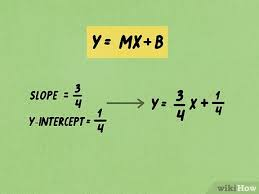
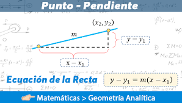
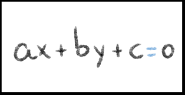

Ecuaciones de la Recta
Las ecuaciones de la recta son herramientas fundamentales en geometría analítica que nos permiten describir y comprender el comportamiento de líneas en el plano cartesiano. A través de estas ecuaciones, podemos identificar la pendiente, la intersección con los ejes, y trazar la trayectoria de la recta con precisión matemática.
Una ecuación de la recta puede expresarse de diversas formas, como la forma pendiente-intersección y = mx + b, la forma punto-pendiente (y - y1) = m(x - x1), o incluso la forma general Ax + By + C = 0. Cada una de estas representaciones ofrece información única sobre la recta, permitiéndonos visualizar su dirección, inclinación y posición en el plano.
Comprender las ecuaciones de la recta es esencial para resolver problemas de geometría, física, ingeniería y muchas otras disciplinas.
Ecuaciones de la Recta:
-
Ecuación Pendiente-Intersección: y = mx + b
La ecuación pendiente-intersección de una recta se expresa como y = mx + b, donde m es la pendiente de la recta y b es el término independiente, que representa el punto de intersección con el eje y.
-
Ecuación Punto-Pendiente: (y - y1) = m(x - x1)
La ecuación punto-pendiente de una recta se utiliza cuando se conoce un punto (x1, y1) de la recta y su pendiente m. Se expresa como (y - y1) = m(x - x1).
-
Ecuación General: Ax + By + C = 0
La ecuación general de una recta se expresa como Ax + By + C = 0, donde A, B y C son constantes, y A y B no pueden ser ambos cero simultáneamente. Esta forma de la ecuación de la recta es útil para realizar operaciones algebraicas y determinar propiedades de la recta.